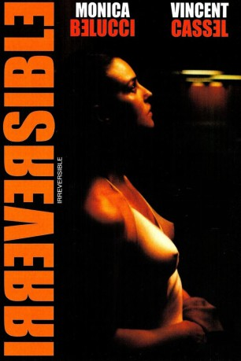

#5090 Irreversibel
Alternativ: Irreversible (Englischer Titel)
 
 IMDB-Wertung: 7.4 / 10
IMDB-Wertung: 7.4 / 10  Metascore: 0
Metascore: 0 
Auf einer Party hat Alex (Monica Belucci) einen heftigen Streit mit ihrem Freund Marcus (Vincent Cassel) und geht daraufhin allein nach Hause. Das erweist sich als folgenschwerer Fehler, denn Alex wird auf dem Heimweg in einer Straßenunterführung vom Zuhälter Le Tenja (Jo Prestia) vergewaltigt. Als Marcus und Alex’ Ex-Mann Pierre (Albert Dupontel) davon erfahren, machen sich die Beiden auf die Suche nach dem Täter. Sie werden fündig - der Vergewaltiger verkehrt im Rectum, einem düsteren Sado-Maso-Club der Schwulenszene...
Jahr: 2002
Dauer: 93 Minuten
FSK: 18
Land: Frankreich Studio: Alamode FilmTonspuren: DD5.1 - ,
Untertitel:
Auflösung: 1080p (1920x856) Größe: 7034 MB
Genre: Thriller, Drama, Krimi, Liebe, Mystery
Regisseur: Gaspar Noé
Drehbuch: Thom Enriquez
Soundtrack:
Darsteller:
 Monica Bellucci als Alex
Monica Bellucci als Alex Vincent Cassel als Marcus
Vincent Cassel als Marcus- Albert Dupontel als Pierre
 Philippe Nahon als L'homme
Philippe Nahon als L'homme- Michel Gondoin als Mick
- Gaspar Noé als Client du Rectum , uncredited
- Jo Prestia als Le Tenia
- Stéphane Drouot als Stéphane
- Jean-Louis Costes als Fistman
- Mourad Khima als Mourad
- Hellal als Layde
- Nato als Commissaire
- Fesche als Chauffeur Taxi
- Jara-Millo als Concha
- Le Quellec als Inspecteur
- Isabelle Giami als Copine d'Alex enceinte
- Fatima Adoum als Fatima
- Foulaux als Janice
- Stéphane Derdérian als Client du Rectum , uncredited
- Christophe Lemaire als Le danseur avec la chemise hawaïenne , uncredited
- Eric Moreau als Extra , uncredited
Datei: X:\FSK18-2000-2009\Irreversibel (2002, FSK18, 1920x856).mkv seit 23.12.2016
Festplatte: FSK18
 Es gibt insgesamt 106 Filme in der Gruppe 'FSK18-2000-2009'
Es gibt insgesamt 106 Filme in der Gruppe 'FSK18-2000-2009'